Human
The Kindled Road
Under the forge-smoke of Ehron, the old wayshrines go cold.
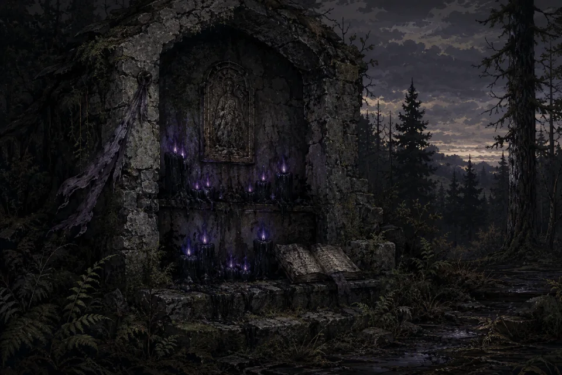
A dark fantasy pixel-art RPG
By the time they meet, you’ll have lived all four lives.
The wayshrines of Ehron burn cold. Far out in the Myr shallows, the nets come up empty. Choose where to wake in Prima Nocta. When the four roads meet, return to the capitals together and find a way through places that once turned you back.
Windows alpha · Human opening in Fae Village · $5 USD or more
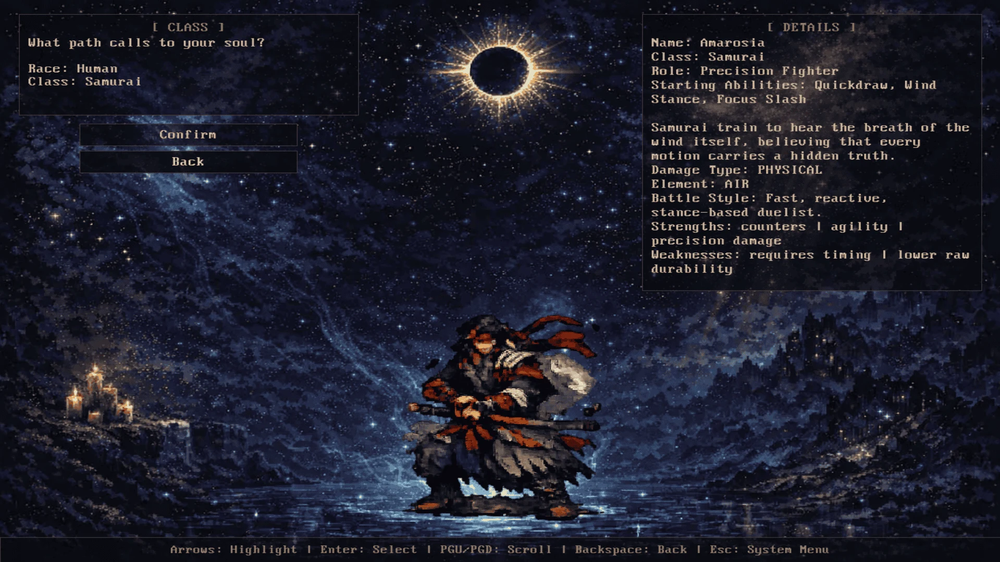
How it plays
At the Fae Cottages, a search turns up a crate wedged under a porch. Pry it open and there’s a tonic for your party. The screens below come from the build in development and show how the Human road continues beyond the village.
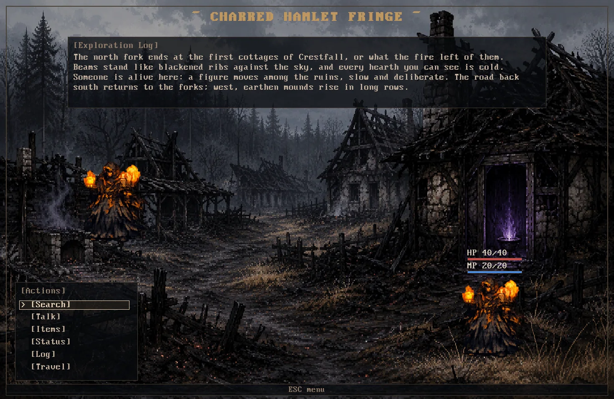
Every room is written. Search it, note the locked door, and remember what the survivors told you. The log keeps the rest.
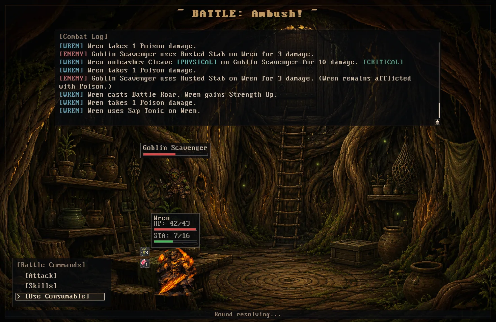
Skills, consumables, poison and criticals, all laid out in the combat log. How you trained and what you packed matter as much as the blade.

Roads open as you find them. Pick a destination on the painted map and arrive from the direction you set out.
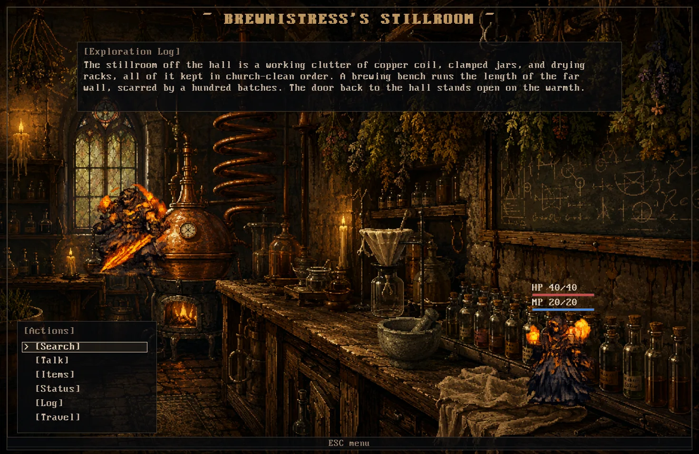
Towns teach what their people know. On the Human road, that starts with brewing in a waystation stillroom.
Prima Nocta
Humans of the Great Hildur Plains, Elves of the Northend Mountains, Dwarves under the Western Peaks and the Myr beneath the southern sea. Each was given a sacred fire, wind, stone or tide. Now every one of them is going wrong, and the shadows of the world are rising to meet it.
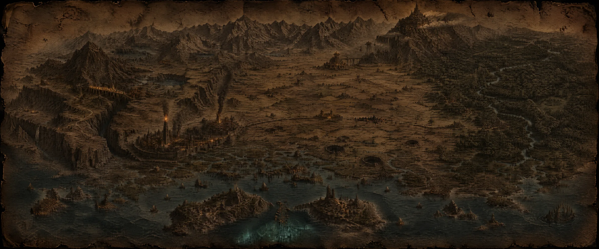
The campaign in development
Each road leads a different hero toward their capital. In the full campaign you’ll be able to follow the Human, Elf, Dwarf and Myr openings in any order. Finish one journey and another hero wakes at the far edge of Prima Nocta. The companions you found along each road travel on with you when the parties finally meet.
Human
Under the forge-smoke of Ehron, the old wayshrines go cold.
Elf
Above the clouds, Sahril still has landing terraces. Its people ride the trolleys.
Dwarf
In the mines beneath Agalos, the lifts go deeper than the lamplight.
Myr
Below the islands, Aaliro hangs in dark water. On the shore, the nets come up empty.
The Kindled Road
Beyond Fae Village, the Human road leads to a candle-church waystation on the plains and a wraith-haunted grotto beneath the fields. These room paintings are from the build in development.
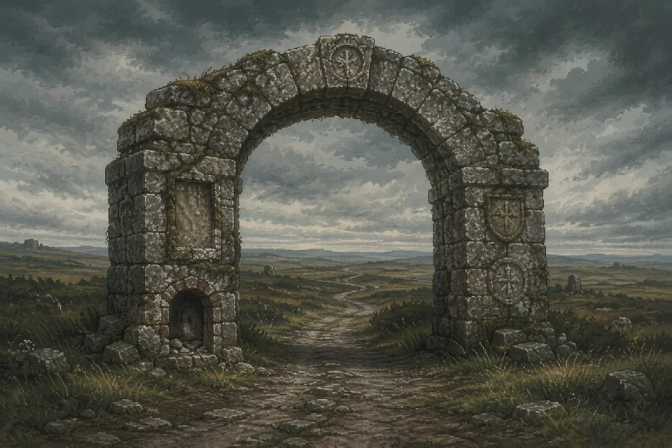
Old Kingdom Arch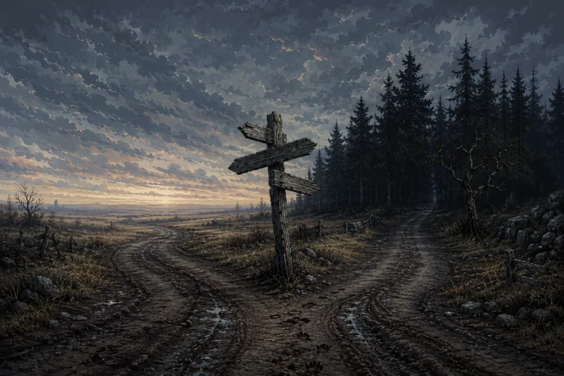
Old Road Forks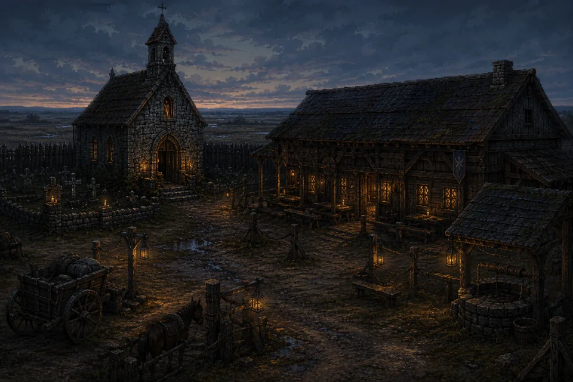
Pilgrims’ Yard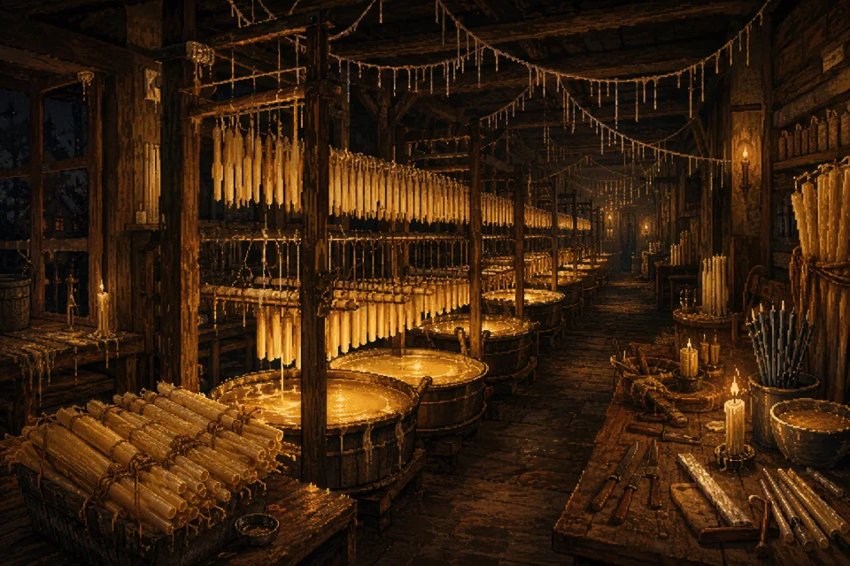
Wickmakers’ Lodge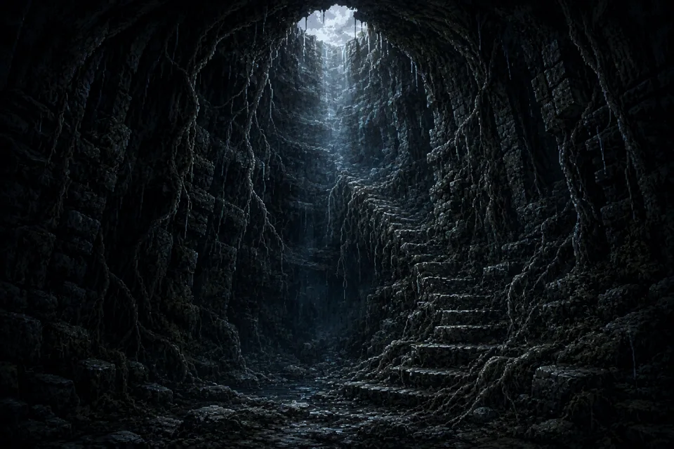
Grotto Mouth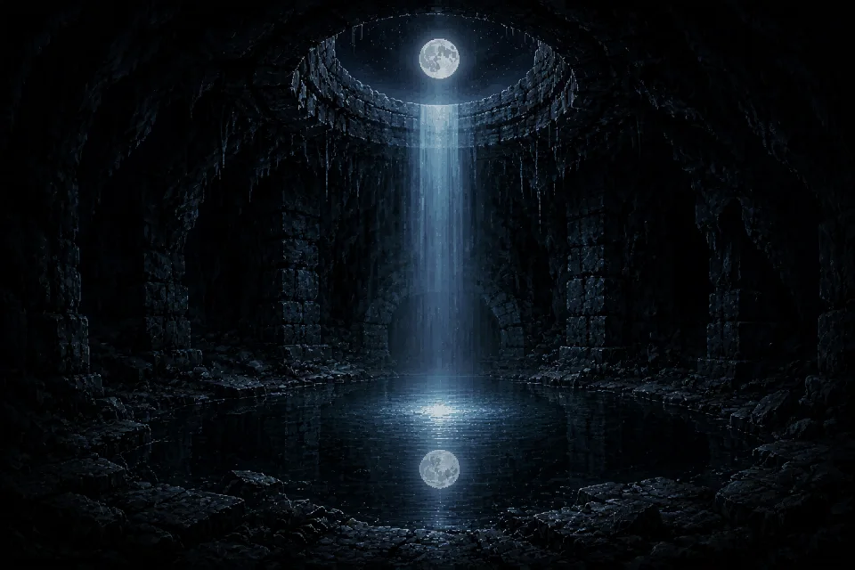
Moonwell CavernWindows alpha
The public alpha covers the Human opening. Take on the village’s early quests, equip your companions and gather ingredients for supplies. Your purchase includes future alpha updates through the launcher.
The alpha uses AI-assisted placeholder art that we plan to replace. Balance may change, and saves may not carry over between versions.